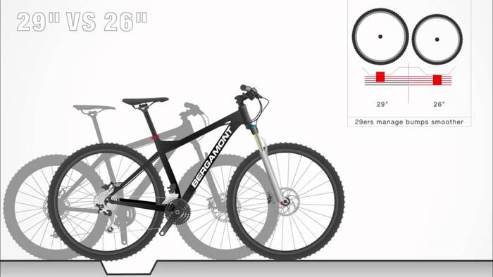

توجه
این کتاب در حال نوشته شدن است. فصل ها کاملتر خواهد شد. شما در حال دیدن آن هستید چون نیازی نیست چیزی برای دیده شدن منتظر کامل
شدن بماند. چیزها همیشه در حال تکمیل شدن هستند، در این مورد هم همینطور است با این اختلاف که عملا تازه شروع به ساخته شدن
کرده؛ ولی دلیلی ندارد همین حالا هم به درد کسی نخورد. انتظار می رود در طول یک ماه آینده، همه فصل های اصلی نوشته شوند.
توجه
این کتاب در حال نوشته شدن است. فصل ها کاملتر خواهد شد. شما در حال دیدن آن هستید چون نیازی نیست چیزی برای دیده شدن منتظر کامل
شدن بماند. چیزها همیشه در حال تکمیل شدن هستند، در این مورد هم همینطور است با این اختلاف که عملا تازه شروع به ساخته شدن
کرده؛ ولی دلیلی ندارد همین حالا هم به درد کسی نخورد. انتظار می رود در طول یک ماه آینده، همه فصل های اصلی نوشته شوند.
خرید دوچرخه حتی از رکاب زدن در سربالایی کوهستانی هم سختتر است. انواع مدلها، انواع فروشگاهها و انواع توصیهها، انتخاب دوچرخه را حتی از آنی که هست هم دشوارتر میکند. بخصوص که دوچرخهای که میخریم تا مدتها با ما خواهد بود و مستقیما در تجربه دوچرخهسواری ما تاثیر خواهد گذاشت. بعضیها با روزها یا حتی ماهها تحقیق دوچرخهشان را انتخاب میکنند و بعضیها با رفتن به مغازهای مورد اعتماد، از روی رنگ و ظاهر دوچرخهشان را انتخاب میکنند و دوری میزنند و اگر مناسب بود، آن را میخرند. شاید برایتان جالب باشد که هر دو روش معقولی را برگزیدهاند و تقریبا هم احتمال رسیدن آنها به دوچرخهای مناسب برابر است!
در این فصل نگاهی میاندازیم به فاکتورهای متنوع انتخاب یک دوچرخه و کار شما را برای خرید آسان میکنیم.
کاربرد
بعد از بحث اندازه و بودجه که آخر از همه در مورد آنها صحبت خواهیم کرد، مهمترین بحث در انتخاب یک دوچرخه، کاربرد آن است. در صورتی که دوچرخه را برای رفتن به کار میخواهید، خرید یک BMX اشتباهترین کار تاریخ است و اگر میخواهید با آن سفر کنید، دوچرخه تاشو انتخاب اول شما نیست. هرچند که هم کسانی هستند که با BMX به سر کار میروند و هم کسی را میشناسم که با یک دوچرخه تاشو مشغول گشتن ایران است.
متاسفانه یا خوشبختانه اکثر ما علاقمندیهای زیادی را با خرید یک دوچرخه دنبال میکنیم و اصلا یک گفتگوی بسیار آشنا در یک دوچرخه فروشی این است:
- خب دوچرخه رو برای چه منظوری میخواین؟
- راستش میخوام تو شهر سوار بشم و البته برنامههای کوهستان هم بتونم باهاش برم و اگر هم پیش اومد سفر چند روزهای رو تست کنم.
در واقع شما با هر دوچرخهای میتوانید همه اینکارها را بکنید ولی در این شرایط شاید بهترین انتخاب شما یک دوچرخه کوهستان باشد. در عمل هم تقریبا اکثر دوچرخه هایی که در شهر میبینید، همان دوچرخههای کوهستان هستند که عملا قابلیت حرکت در هر مسیری را دارند. این را هم همینجا بگویم که بسیاری از فروشندههای ایران، دوچرخههای کوهستان را کماکان با نام دوچرخههای هیبرید به فروش میرسانند.
اما مثلا اگر کسی که به طول خاص تنها به دنبال رفت و آمد بین خانه و محل کار و دوستان است، میتواند انتخابی بسیار کاراتر داشته باشد: یک دوچرخه شهری با لاستیکهای نازکتر برای حرکتی سریعتر روی کوچهها و خیابانهای آسفالت.
پس در قدم اول لازم است کاربرد خود را مشخص کنید و انتخاب شما بسیار راحتتر خواهد شد.
ترمز
ترمزهای دوچرخه در دو خانواده مختلف عرضه میشوند: ترمزهای لقمهای و ترمزهای دیسکی.
ترمزهای لقمهای با فشرده شدن دسته ترمز، به طوقه چرخ نزدیک میشوند و با کشیده شدن به بخش فلزی طوقه، سرعت دوچرخه را کم میکنند. در مقابل ترمزهای دیسکی برای متوقف کردن دورچه از یک دیسک مستقل که فقط برای ترمز به توپی چرخ شده استفاده میکنند و در نتیجه مزایایی مثل ترمز قویتر یا عدم بروز مشکل در مواقع بارندگی و غیره را دارند.
مزایای ترمزهای دیسکی بسیار است و در بازار ما هم اشارههای خیلی جدی به آن میشود اما شاید برایتان جالب باشد که هنوز هم تمام دوچرخههای مسابقهای حرفهای از ترمز لقمهای استفاده میکنند. دلیل این امر بیشتر مسائل قانونی است اما وجهه دیگر آن این است که ترمزهای لقمه ای جدید هم به اندازه کافی و قابل اعتماد هستند.
جدول زیر مزایا و معایب ترمزهای لقمه ای و دیسکی را نشان میدهد:
| نوع | مزایا | معایب |
|---|---|---|
| لقمهای | تنظیم راحتتر - قیمت کمتر | قدرت کمتر - کیفیت کمتر در باران |
| دیسکی | قدرت بیشتر - عدم مشکل در آب و هوای متنوع | تنظیم سخت تر - قیمت بالاتر |
از نظر من اگر دوچرخهای عمومی میخرید در مورد مدل ترمز چندان سختگیر نباشید و مشخصههای دیگر را مهمتر از ترمز در نظر بگیری. هر دوچرخه مرسومی که بخرید، ترمزی به اندازه کافی قدرتمند دارد.
کمک فنرها
دوچرخهها را از نظر کمک فنر میشود به سه گروه تقسیم کرد:
- بسیاری از دوچرخهها هیچ کمک فنری ندارند. این گروه شامل اکثر دوچرخههای جاده، مسابقهای، تفریحی و ورزشی میشوند. نداشتن کمک فنر باعث میشود تمام نیروی رکاب زنی به چرخها منتقل شود ولی در مقابل حرکت در مسیرهای ناهموار را با تکانهای بیشتری همراه میکند.
- اکثریت دوچرخههای کوهستان، تنها در چرخ جلو دارای کمک فنر هستند. این دوچرخهها را Hardtail مینامند چون پشت آنها سفت است (کمک فنر ندارد). کمک فنر جلو میتواند ضربههای ناشی از ناهمواری مسیر را تا حدی جذب کند و اجازه حرکت راحتتری در مسیرهای ناهموار را فراهم کند. این کمک فنرها معمولا قابل تنظیم و در عین حال قفل شدن هستند. مثلا اگر قفل فنر جلو روی فرمان باشد، یک دوچرخه سوار مسابقهای احتمالا در حین رکاب زدن سریع کمک فنر را قفل میکند تا انرژی بیشتری از رکاب به چرخ منتقل شود اما در لحظه رسیدن به موانع، قفل را باز میکند تا ضربههای سنگهای مسیر، جذب کمک فنر شوند.
- دوچرخههایی که هم در جلو و هم در عقب دارای کمک فنر هستند را Full Suspension مینامند. این دوچرخهها معمولا بسیار گرانتر بوده و راکب آنها میتواند بدون دردسر پرشهای بلند انجام دهد و مطمئن باشد که ضربه ناشی از فرود، جذب کمک فنر عقب شده، به کمرش فشار نخواهند آورد.
اگر نیاز خاصی ندارید، کمک فنر هم جزو بخشهایی است که نیازی به توجه چندانی ندارد. اگر دوچرخه کوهستان میخرید ممکن است بر اساس قیمتی که پرداخت میکنید کمک فنر بهتری بگیرید (مثلا هوا در مقابل روغن یا اندازه بازی کردن کمک فنر و قابلیت تنظیم آن از روی فرمان و ...).
اندازه چرخ
در گذشته اکثر دوچرخهها قطر چرخ ثابتی داشتند. ولی امروزه سازندهها مشغول تغییر این وضعیت هستند. قطر چرخ دوچرخههای قدیمیتر ۲۶ اینچ بود اما چند سال قبل عدد ۲۷.۵ به استاندارد تبدیل شد. و این روزها هم بسیاری فروشندهها به شما عدد ۲۹ را پیشنهاد میدهند اما اگر سراغ دوچرخههای تاشو بروید، اصلا بعید نیست با چرخی ۲۰ اینچی روبرو شوید!
عدد مشابه برای دوچرخههای کورسی، ۷۰۰ است که به حجم ۷۰۰ سی سی اشاره میکند.
سایز چرخ در سرعت یا قدرت دوچرخه شما تفاوت عظیمی ایجاد نمیکند. بخصوص اگر بحث سر اندازههای ۲۶ تا ۲۹ باشد. تفاوت اصلی این سایزهای چرخ در حین دوچرخه سواری به توانایی عبور از موانع اشاره میکند. با چرخی ۲۹ اینچی میتوانید به راحتی از روی یک جدول ۱۰ سانتیمتری رد شوید در حالی که همین کار با چرخ ۲۶ اینچی نیاز به دقت زیاد دارد و با چرخ ۲۰ اینچی غیر ممکن است. مشخص کننده این ماجرا چیزی به نام زاویه حمله است.

فاکتور غیردوچرخهسوارانه این ماجرا، جای دادن دوچرخه در خودرو است! معلوم است که دوچرخهای با چرخ ۲۹، یک و نیم اینچ طولانیتر از یک دوچرخه با بدنه مشابه ولی چرخ ۲۷.۵ اینچ است! این مساله در جای دادن یک دوچرخه در پشت پراید به راحتی خودش را نشان خواهد داد!
با گشتن اینترنت به توصیههای بسیار متنوعی در مورد اندازه چرخ خواهید رسید ولی اگر نیاز خاصی ندارید، تقریبا هر سه اندازه اصلی برای کاربرد شما مناسب خواهند بود اما اگر به ۲۹ اینچ فکر می کنید، مطمئن باشید که مشغول خرید چیزی خاص هستید که تازه به بازار رسیده و شاید لازم باشد برای خریدنش دلایلی بیشتر داشته باشید.
تعداد دنده
یکی از اولین سوالاتی که کسانی که دوچرخه تازه شما را دیدهاند از شما خواهند پرسید این است که «چند دنده است». واقعیت این است که یک حرفه ای ممکن است در مورد «نسبت دندهها» سوال کند ولی دنده بیشتر الزاما به معنی دوچرخه بهتر یا حتی گزینههای مناسبتر برای حرکت کردن نیست.
دوچرخهها ممکن است بدون دنده باشند، در عقب دنده داشته باشند یا هم در عقب و هم در جلو. کنترل دندهها از طریق دستههایی که روی فرمان قرار گرفتهاند انجام میشود و در صورت داشتن دو دنده، معمولا کنترل سمت راست فرمان دنده عقب و کنترل سمت چپ دنده جلو را هدایت میکند. ضرب کردن تعداد چرخ دندههای جلو ضربدر چرخ دندههای عقب، تعداد دنده را مشخص میکند.
معمولا دندههای عقب بیشتر (مثلا هفت، هشت، نه یا حتی یازده تا) بوده و دندههای جلو میتواند یک، دو یا سه چرخ دنده باشد. یک دوچرخه کوهستان مدرن معمولا دو دنده در جلو و یازده دنده در عقب دارد در حالی که یک تاشوی شهری، فقط ممکن است دارای ۷ دنده در عقب باشد. این در حالی است که بسیاری از دوچرخههای رده متوسط، ۳ دنده در جلو و ۷ دنده در عقب دارند.
بازهم واقعیت این است برای یک دوچرخه سواری مرسوم غیرقهرمانی، تقریبا هر دوچرخهای به شرط داشتن دنده برای شما مناسب است. دندههای بیشتر معمولا به شما امکان تنظیم دقیقتر دندهها را میدهند که بیشتر که بیشتر به کار یک حرفهای میآید.
این را هم اضافه کنم که افراد حرفهای چرخ دندههای جلو و عقب (مشهور به طبق قامه (جلو) و خودرو (عقب)) را بر اساس مسیر مسابقه تغییر میدهند تا ترکیب دندهای مناسبی در طول مسیر داشته باشند. کارخانهها هم به همین شکل سعی میکنند ترکیبی از دندهها را روی دوچرخهها بگذارند که برای اکثر شرایط به اندازه کافی مناسب باشد.
وزن (جنس)
وزن دوچرخه هم از مهمترین گزینههای خرید برای بسیاری آدمها است. بدنه دوچرخهها سابقا از آهن ساخته میشد که امروزه تنها برای دوچرخههای بسیار ارزان استفاده میشود. گزینه مرسومتر آلومینیوم و آلیاژهای دیگر آلومینیومی است که باعث سبکتر شدن دوچرخه میشود. مسابقه دهندههای جدی به دنبال بدنههای کربنی هستند که وزن را حتی پایینتر میآورند ولی معمولا برای من و شما چندان مناسب نیستند چون بدنههای کربنی ضربه پذیر بوده، به راحتی ممکن است ترک بردارند.
در نهایت هزینهای که پرداخت میکنید بسیار مرتبط است به وزنی که دریافت میکنید. یک دوچرخه کوهستان چهارده کیلویی کمی سنگین حساب می شود ولی کماکان گزینه مناسبی است. اگر سراغ دوچرخههای شهری بروید وزنی مثل ۱۲ کیلو دوچرخهای معقول حساب میشود و اگر پول بیشتری بدهید یا بدنههای بسیار نازکتر انتخاب کنید میتوانید تا ۱۰ کیلو هم پایین بیاید.
شاید برایتان جالب باشد که در این مسابقه کم کردن وزن و پیشرفت تکنولوژیهای مرتبط، فدراسیون جهانی دوچرخه سواری مجبور شده قانونی بگذارد که میگوید حداقل وزن یک دوچرخه مسابقهای باید حداقل ۶۸۰۰ گرم باشد و هیچ دوچرخهای کمتر از این وزن، اجازه شرکت در مسابقات رسمی را ندارد.
امکانات
بدنههای مختلف قابلیتهای مختلف دارند. دوچرخهای که من برای رفت و آمد به مهمانی، محل کار و خانه دوستان استفاده میکنم حتما باید دارای باربند باشد تا بتوانم کولهام را به آن ببندم. اگر در باران سوار دوچرخه شوید و گلگیر نداشته باشید حتما پشت لباستان خیس خواهد شد و خیلیها برای راحت کردن خیالشان حتما میخواهند یک تلمبه به بدنه دوچرخه متصل باشد و تقریبا همه دوچرخه سوارهای مرسوم، داشتن قمقمه را توصیه میکنند. اگر هم بخواهید به سفر بروید، امکان اتصال خورجین به بدنه الزامی است. بعضی بدنههای دوچرخه، سوراخهایی از پیش تعبیه شده برای این چیزها دارند. گاهی هم کلا دوچرخهای که میخرید دارای باربند و زنگ و چیزهای دیگر است و راستش را بخواهید به نظر من یکی از مفیدترین اجزای یک دوچرخه، جک آن است! اگر به یکی از اینها نیاز دارید، حتما چک کنید که روی بدنهای که انتخاب میکنید قابلیت اتصال چیزی که میخواهید وجود داشته باشد. البته چندان هم جای نگرانی نیست، تقریبا برای هر بدنهای، به شکلی میشود هر چیزی را نصب کرد.
راحتی
دوچرخهها راحتیهای مختلف دارند. از یک دوچرخه مسابقهای انتظار راحتی چندانی نداریم و در یک دوچرخه کورسی بدن تا حد ممکن پایین میآید تا مقاومت در برابر هوا کم شود. اما یک دوچرخه تفریحی شهری اجازه میدهد کاملا عمودی بنشینید و مناظر را نگاه کنید. اما روی دوچرخه دوم نمیشود بیشتر از یکی دو ساعت رکاب زد. شکل بدنه و زوایای قرار گیری بدن، فاکتور اول مشخص کننده راحتی هستند. دوچرخه ای انتخاب کنید که در هنگام راندن، دستهایتان چندان رویش کشیده نباشد و بدنتان روی آن احساس راحتی کند. در فصل انتخاب سایز مناسب، بیشتر در این مورد حرف خواهم زد.
نکته بعدی در راحتی شما، شکل زین است. زینهای پهن تر به شما اجازه راحتتری میدهد در حالی که زینهای مسابقهای معمولا نازک و سفت هستند. اصلا عجیب نیست اگر ببینید که کسی درست بعد از خریدن چرخهای با زین مسابقهای، زین آن را با چیزی راحتتر (بزرگتر و نرمتر) عوض کند. اما شاید بد نباشد اگر تازه کار هستید اینکار را یکی دو هفته به عقب بیندازید - شاید زین اصلی برای شما به اندازه کافی راحت باشد.
سیستمجدا کردن اجزا
دوچرخه درست مانند یک کامپیوتر است. میشود اجزای آن را به روز کرد، جدا کرد، تمیز کرد یا هر چیز دیگر. در گذشته اینکار نیازمند انواع آچار بود و دارا بودن مهارتهای فنی ولی حالا با مکانیزمی به اسم Quick Release فقط در چند ثانیه میتوانیم چرخها و معمولا زین را جدا کنیم. بخصوص در مورد چرخ جلوی دوچرخههای بزرگتر این نکته مهمی است و به شما در جا دادن دوچرخهتان در ماشین کمک بزرگی میکند. همچنین داشتن کوییک ریلیز برای زین، اجازه میدهد دوچرخه را به دوستان قرض بدهید و آنها در چند لحظه، اندازه آن را به چیزی که برایشان مناسب است تغییر دهند. این را هم بگویم که در جاهایی که دزدی زین و چرخ و غیره مرسوم است، مکانیزم کوییک ریلیز اینکار را برای دزد راحت میکند. خوشبختانه ایران هنوز جزو این جاها نیست.

سری لوازم
در جهان دو یا سه کارخانه بیشتر لوازم اصلی دوچرخههای ما را نمیسازند که مشهورترین آنها Shimano است و کارخانههای دیگر اسرام و کمپاگنولو. اما این کارخانهها ردههای مختلفی از تولیدات دارند و گفتن «شیمانو» مثل این است که بگوییم «ماشین من سایپا است». مطمئنا بین پراید و کپچر فاصله است. رده لوازم معمولا روی سیستم تعویض دنده عقب قابل خواندن است و ترتیب رده بندی لوازم شیمانو (مشهور به groupset) از سطح پایینتر به سطح بالاتر به شرح زیر است:
- Tourney
- Altus
- Acera
- Alivio
- Deore
- DEORE
- SLX
- Deore XT
- Deore XT Di2
- Deore XTR
- Deore XTR Di2
- Zee and Saint
ولی اصلا از اینکه یک تورنی یا Acera بخرید نگران نباشید. دوچرخه اول من تورنی است و هنوز هم به خوبی کار میکند. تقریبا نصف بالای جدول تنها مربوط به سیستمهای مسابقهای هستند و در نیمه اول هم رده بالاتر بیشتر به معنی کمی سبکتر یا کمی سریعتر است که همزمان باید به معنی احتمال خرابی بیشتر و نیاز به تنظیم بیشتر تفسیرش کنید. از نظر فنی تنها توصیه میکنم این اسمها را برای تخمین کیفیت یک دوچرخه و حدود قیمتی آن نگاه کنید و نه برای انتخاب. مثلا اگر دو دچرخه را در یک رده قیمت پسندید ولی یکی رده آسرا بود و یکی آلتوس، آسرا احتمالا انتخاب بهتری است.
جدول زیر رده بندی سه گروپست مشهور را نشان میدهد:

فرمان
فرمانها شکلهای مختلفی دارند. بسیاری از دوچرخههای کوهستان فرمانها مستقیم و صاف دارند و دوچرخههای جاده، فرمانهای مشهور به دراپ (کورسی). فرمانهای دیگر شکلهای پروانهای یا به هر شکل دیگری یافت میشوند. فرمان صاف، به شما کنترل بیشتری روی دوچرخه میدهد و فرمان پروانهای اجازه میدهد دستهایتان را در حالتهای مختلفی بگذارید و در نتیجه جلوی خستگی را بگیرید. اما مهمترین بحثی که باعث شد بحث فرمان را به شکل مستقل مطرح کنم این است که یک فرمان عریض، جلی مانور شما در شهر را میگیرد. در صورتی که به فکر یک دوچرخه برای حرکت در شهر و احتمالا - تا حدی معقول - لابلای ماشینها هستید، بهتر است فرمانی با عرض حداکثر ۷۰ سانتیمتر بخرید. دوچرخههای شهری حتی فرمانهای کوچکتری هم دارند تا خطر برخورد به موانع را کمتر کنند. در مقابل یک دوچرخه کوهستان فرمانی عریضتر دارد تا کنترل شما بر جاده را بهتر کند.
جنسیت
در گذشته بسیاری از شرکتها مدعی میشدند که دوچرخههای زنان و مردان به شکل ماهوی با یکدیگر تفاوت دارند. این روزها شرکتهای بزرگ به سمت این رفتهاند که در بحث دوچرخه سواری بین بدن زنان و مردان تفاوتی جدی نیست و در نظر گرفتن قد و فاصله فاق تا زمین و چنین چیزهایی برای انتخاب دوچرخه کافی است. البته هنوز هم بیشتر شرکتها دوچرخههایی با عنوان «مخصوص زنان» میسازند چون از نظر فروش موفقیت بیشتری به دنبال دارد. معمولا دوچرخههای زنان میله وسطی کوتاهتری دارند تا رد کردن پا نیازمند بالا بردن زیاد پا نباشد یا به شکل پیشفرض از زینهایی پهنتر روی دوچرخههایی که به اسم «ویژه زنان» تبلیغ میشوند استفاده میکنند تا هماهنگی بیشتر با شکل نشیمنگاه عریضتر زنان داشته باشد. در نهایت انتخاب دوچرخه بیشتر وابسته به سلیقه شما است و اگر زنی هستید که دوچرخهای با اسم «مردانه» را پسنیدهاید، هیچ نگرانی ای نیست به خرید آن نداشته باشید.
زیبایی
نظر من را بخواهید بعد از سایز و پولی که دارید، زیبایی یکی از مهمترین فاکتورها است. دوچرخهها ساعتهای بسیاری زیر پای شما است، بارها به آن نگاه خواهید کرد، ممکن است گوشهای در خانه شما باشد و برای سالها بخشی از زندگی شما. فرض کنید در حال خرید یک تی شرت هستید که قرار است ۳ سال آن را بپوشید. مطمئنا در کنار راحتی و کارایی و غیره، باید از ظاهر آن هم خوشتان بیاید. خوب است این فاکتور مهم را در انتخاب لحاظ کنید. چه در رنگ و چه در شکل ظاهری یا حتی گزینههایی مثل شکل فرمان.
برند
مثل هرچیز دیگر، چند برند بزرگ بیشترین دوچرخههای بازار را میسازند. برندهای گرانتر مانند جاینت (Giant)، کنندال (Cannodale)، اسکات (Scott)، کیوب (Cube)، ... معمولا قیمتهای بیشتری دارند ولی در عوض میتوانید از هماهنگی کامل قطعات با یکدیگر و طراحی بدنه و غیره مطمئن تر باشید. اما این حرف اصلا به این معنی نیست که برندهای کمی ارزانتر مثل ویوا (Viva) یا اورلرد (Overloard) دارای دوچرخه های خوبی نیستند. اینجا هم مثل بحث سامسونگ و اپل و غیره، گاهی آدمها طرفدار سرسپرده یک برند میشوند یا احساس می کنند خریدن یک برند به آن ها شخصیت میدهد یا هر چیز احمقانه دیگر. از این آدم ها نباشید.
سایز
سایز یک دوچرخه و راحتی آن مهمترین نکتهای است که حین خرید باید به آن توجه کرد. متاسفانه در ایران معولا امکان سواری واقعی قبل از خرید وجود ندارد. سعی کنید از جایی خرید کنید که بتوانید مسیری حتی کوتاه را سوار دوچرخه شوید.
راحتی دوچرخه سوار به دو نکته مربوط است: هماهنگی بدنه با بدنه شما و سایز صحیح. دوچرخهها در واقع یک بدنه هستند بعلاوه دو چرخ و خرت و پرتهایی مانند زنجیر و غیره که یک فرمان از طریق قطعهای به نام کرپی روی آن بسته شده. زاویه نشستن بر اساس طرحهای مختلف متفاوت است. دوچرخهای که روی آن عمودیتر بنشینید برای مسافت کوتاه راحتتر به نظر میرسد ولی در مسافت طولانی خسته کننده است. دوچرخهای را تست کنید و ببینید که شکل نشستن روی آن برایتان راحت باشد. دستها بیش از حد کشیده نشده باشند. فرمان خیلی بالا نباشد و غیره و غیره.
اما جدای از شکل بدنه، بحث سایز هم مطرح است. به شکل سنتی در ایران با عددهای مختلفی در مورد سایز صحبت میکنند اما در دنیای امروز، عباراتی مثل اسمال، مدیوم و لارج مرسومتر هستند. مثلا ممکن است یک کمپانی مانند جاینت، بگوید که برای قد ۱۷۷ تا ۱۸۸، سایز «مدیوم لارج» را پیشنهاد میکند. برای اطلاعات بیشتر، به فصل مستقل «سایز بندی دوچرخهها» مراجعه کنید.
قیمت
و خب مشخص است که قیمت یکی از اصلیترین دلایل انتخاب است. بهتر است با یک ایده از پولی که میخواهید بدهید راهی بازار شوید و «گول» نخورید که دو برابر خرج کنید. دوچرخه گرانتر الزاما بهتر نیست. مثلا اگر دنبال دوچرخهای هستید که با حداقل مراجعه به تعمیرگاه مدتها سوار آن شوید احتمالا یک دوچرخه رده پایین شیمانو بسیار بهتر از یک Deore است یا اگر قرار است دوچرخه را در خیابان قفل کنید، اصلا نباید سراغ چیزی گرانقیمت و درخشان بروید. بخصوص اگر این دوچرخه اول شما است، زیاد هزینه نکنید. اگر واقعا مدتی سوارش شدید، به زودی کشف خواهید کرد که بهترین دوچرخه برای شما چیست و دوچرخه بعدی را دقیقتر انتخاب خواهید کرد. به عنوان یک تخمین باید بگویم که با ۱۰۰ دلار میشود یک دوچرخه خرید، با ۳۰۰ دلار میشود یک دوچرخه بسیار مناسب خرید که سالها از آن لذت ببرید و با ۱۰۰۰ دلار میشود برای مصرفی حرفهای صاحب دوچرخه شد. به دلار گفتم چون این روزها ریال دائما در حال پایین آمدن است.
خلاصه؟
میزان هزینهای که میخواهید بکنید را در ذهن داشته باشید و کاربرد خود را انتخاب کنید. منطقا در اولین دوچرخه این کاربرد یا کوهستان است یا هیبرید یا شهری. به یک فروشگاه معتبر بروید که فروشنده اش حوصله کافی داشته باشد و بر اساس میزان پول و کاربرد به شما چند دوچرخه نشان خواهد داد. به ترمزها یا حتی رده دندهها نگاه کنید تا بگویید از موضوع سر در میاورید، به اندازه چرخ و به قشنگی بدنه هم توجه کنید و بعد دو سه تا را سوار شوید و سایز و راحتی بدن را بررسی کنید و بالاخره یکی را بخرید. شاید هم قبل از خرید نهایی سر زدن به دو سه مغازه دیگر گزینه بهتری باشد. دوچرخه مورد نظر شما را انتخاب خواهد کرد و خودش به شما خواهد گفت «منو بخر! منو بخر ما با هم دوستان خوبی میشیم».